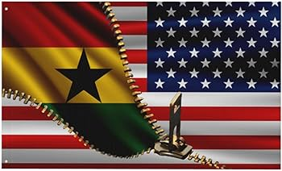
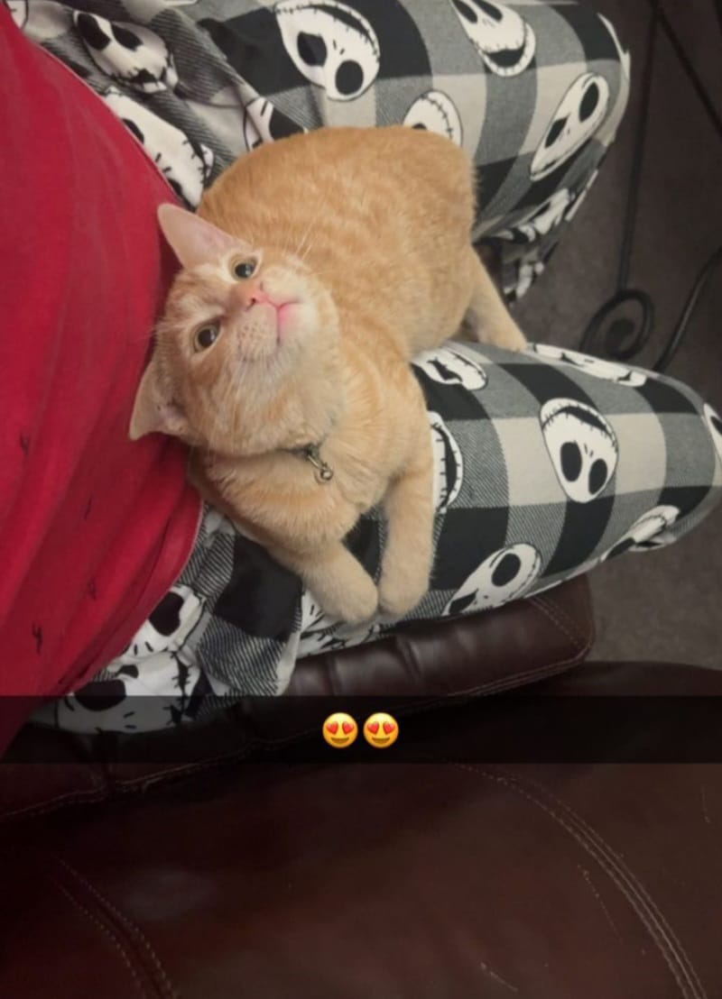
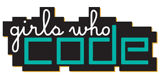
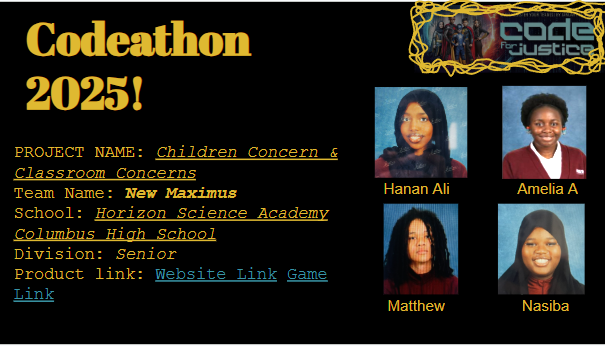

About Me
Hi, my name is Nasiba Ibrahim, popularly known as nasy. I have been a student at Horizon Science Academy for the past three years. I am a Ghanaian who resides in the United States. I like to draw, paint, write, solve puzzles, and do word searches in my free time. Sometimes, too, I like to sleep and just scroll on social media.
My favorite color is anything from lilac to lavender or wisteria. I love cats, though I used to have ailurophobia or felinophobia (fear of cats) due to a past trauma. I used to have a cat called Estherosa. She was the cutest thing ever. I used to pray that school ends early so I can go cuddle with her. I also love strawberries, but I also like bananas and watermelon.
 Journey
Two years ago, I was placed in a programming class, not fully understanding where it would lead. At that time, I wasn’t sure what path I was meant to be on, but little did I know, this would be the beginning of a transformative journey. My first experience with programming was a bit of a mystery to me; I didn’t know how to write code or what its purpose could be. However, as I began to learn the basics, I quickly became fascinated by how technology could bring ideas to life and solve real-world problems.
I started small, with HTML and CSS, and slowly worked my way up to more complex languages like JavaScript, Python, and C++. My goal was to understand not just how to write code, but also how it all comes together to create dynamic, interactive applications.
By the end of my first year, I had realized that programming wasn’t just about typing code it's about creating something meaningful. I dove deeper into the world of algorithms and problem-solving, and the more I learned, the more passionate I became. Building my first project a responsive personal portfolio website was a milestone that solidified my love for coding.
As year two started, I became a sister of the Girls Who Code club, which helped me in understanding and helping others know more about what coding is and how it can make a big change in our lives
By the end of year two, I began contributing to open-source projects and collaborating with other developers on GitHub, which opened up new learning opportunities.

Competitions
I did so many competitions, but only one of them was for programming class which is very sad, but I am still proud of myself, my teammates, and my mentor. The competition I did this year was for Codethon 2025, Code for Justice. My teammates and I did a very good job, we came in second place, which we never expected.
My Teachers
In year one, I had one of the amazing teachers from my school, who teaches coding, who was Mr.Dal. He taught me a lot of things that I will be forever grateful. I remember when I started, I knew absolutely nothing about coding, but he helped me through mt journey of discovering and knowing what coding was. Though my journey is still going on.
In year two, I came with no vision on what I wanted to do, so my teacher helped me create a vision. My knowledge of coding in expanded. I created websites back to back because my teacher said practice makes perfect. My vision for what I wanted to do and achieve in year two was exceeded. I know my teacher brought out the best in me, and I know I can push harder and do my best.Mrs Pathan is the name of my year two teacher, such an amazing teacher, a mother to all, I recommend everyone to get a Mrs Pathan in their life.
Fun Facts
There are so many fun facts about me, but here are a few:
- I am double jointed
- I have a lazy eye and I am also cross-eyed
- I may have a mean face, but I am actually very nice, or so I think
- I am also very loud and quite at the same time
- I am also very weird, becasue an animal i want own is a snow ball python.